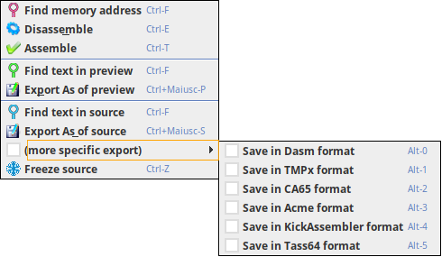
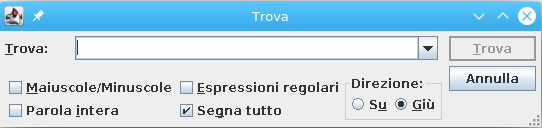

The Source menu has those choices:

It asks you to insert a 4 chars hex number and then it positionate the memory table in the row of that address.
It starts the disassember procedure that parse again the binary file and apply the modification to the source.
For speed up purpose only one passage is done when it generate the preview source, then another one is done when generate the source.
Two passes is always needed to apply one modification generated in one point to the previous passed one (like a jump in one point to a back location that were not already labeled), so the preview is always one step behind,
but source windows has the code processed two times as there is no difference into the engine when generating a preview or source, but only a different output of collected data.
Since the actual state of disassembly is stored in the project you should find such difference in the first generation or when you mark a data area as code.
When the generation is done, the preview and source area will be updated but you will not lose the actual line position.
With an option you can activate the automatic disassembly at every modification you apply into the project.
This run the assembler you had selected into option to the source for generarting a binary into the output temp directory set in option.
The executed assemblers are in native java bytecode, so there are not problems if you execute JC64dis in Windows, Linux or MacOs.
If for some reason we cannot generate a java bytecode from the assembler (that usually are made in C) that assembler will not produce an binary output.
This option is added for let you verify on the fly that the source can be assemblate again into binary.
It opens a standard windows for inserting a text and find it inside the preview area. It has many option, like mark up all match, go backward and forward, match regular expression, whole word and lower/upper case.

Export the actual preview source into a file.
It opens a standard windows for inserting a text and find it inside the preview area. It has many option, like mark up all match, go backward and forward, match regular expression, whole word and lower/upper case.
Export the actual preview source into a file.
You can even export as another assembler format by choosing the right one you need into sub-menus.